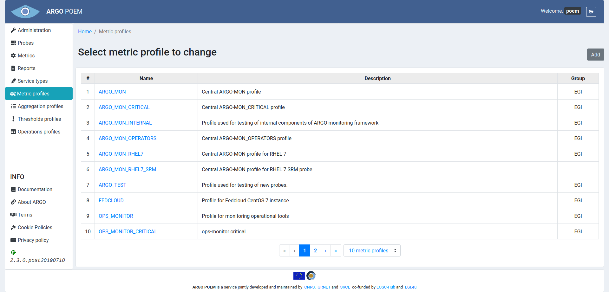
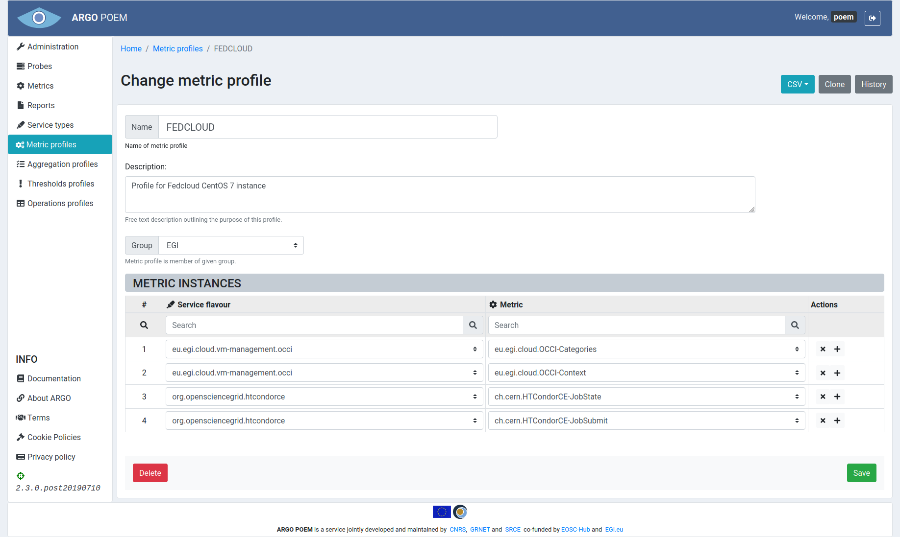

Metric profiles
List of metric profiles
Metric profiles page is shown in the image below. It is accessible from the menu on the left side.

Metric profile details
By clicking the profile name, user can see the particular profile's details (shown in the image below).

Sections
In the upper part of the page, there are Name, Description and Group fields. Every profile must be assigned to a group, which means the group should be created beforehand. Name and Group fields are mandatory while Description field is arbitrary.
Metric instances
In the Metric instances section, user may add new, or delete the existing service type - metric pairs. New empty fields are created by clicking the button with "+" sign, and by clicking "x" next to the service type - metric pair, that pair is removed from the metric profile. All the fields are autocomplete, so when the user starts typing, existing service types/metrics are suggested.
Same as for other resources, only users with appropriate permission may modify metric profile. That is, users that have metric group the profile belongs to assigned to them, or users with superuser permission.
Validation of pairs
Service type - metric pairs should be filled with some values and neither of them can be left empty:
Duplicated pairs are not allowed and validation of form will forbid them:

For easy tracking of changes that have been made in existing profile, borders of service type - metric pairs are colored differently. Newly added pairs are always in green border while changed part (either service type or metric or both) of pair is in red border:

Filtered and full pairs view
Also, search fields are introduced for pleasant editing or adding new pairs in metric profile so that tracking of how many pairs of particular metric or service type is easily handled:
Adding or editing of pairs in filtered view is also allowed, but what should be noted is that return to full view will automatically sort all pairs, including the ones added in filtered view:
Metric profile history
By clicking the History button, the user can see all the changes made to the profile, when they were made and by whom (image below).
Metric profile clone
By clicking the Clone button, the user can easily derive new profile from existing one meaning that description and metric instances tuples will be copied, while profile name will be changed to Cloned <original_profile_name>. User is free to change the name of profile to his/her needs.